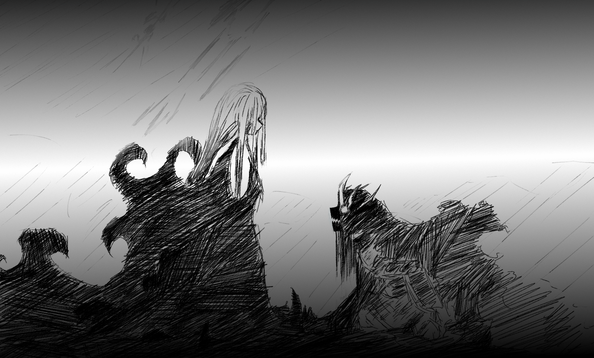

Kazar - Казар

Further.
Charge further.
No pause.
Break them.
Kill all of them.
Friend or foe, doesn't matter.
They all die sooner or later.
It all doesn't matter.
They will not reach Ibalia, I will make sure of that.
Charge further.
Break them...
Kill all of them...
Lady Scarlet doesn't matter to me anymore.
Now, it's just Ibalia who can keep me sane.
I broke free from this shell and revealed what we really are, Monsters made out of blood and iron.
We do not care about anything else than killing.
that's what we are.
My body is drenched in the blood of men and my brethren alike, relinquished my weapon long ago.
This feeling, the hunger for more.
I smell nothing more than blood
I feel nothing more than blood
It doesn't matter, friend or foe, they are all standing in my way.
I'll slay and tear everything in my way.
Nothing will stop me.
And I indulge in this bloodbath, tearing everything apart that dares to be too close to the gate to Ibalia.
I will protect her, no matter what I will become.
Sanity is second priority.
Nothing felt as good as this, nothing at all.
nothing..
...nothing.
My past...
What was I before I awakened?
I do not remember who I was before I lived as a servant of Lady Scarlet...
All I knew was the other Calamitous being my brethren, or something in that category...
Why am I protecting Ibalia?...
Do I even know her?
Ibalia...
...Iba...
And then it happens, out of the blue.
Behind the gate I was guarding came a noise, no, a loud rumbling.
I was shocked, immediately turned around.
What happened?
Wait- No time, I have to get to her.
I get a hold on the gates and pry them open with all my might.
This shell couldn't possibly keep such powers for eternity, surely.
As I open the gates to the halls of Ibalia, I see piles of Human corpses, a few of my brethren still alive.
I close the gates shut and order them to keep it shut.
They pile up on it without hesitation.
Couldn't give less of a damn, shall they die protecting this gates until the end-times.
I won't question how these bags of flesh managed to get into this part of the castle, let alone kill few of our best guardians.
I proceed to stampede to Ibalia's chambers, only to lay eyes on my dear Ibalia beaten senseless.
This sent me furious, but sent a despair throughout all of my body."Ibalia?...
Ibalia, wake up.
...Ibalia.
Ibalia!
Wake up Ibalia, wake up!
The God-slayer is here to take Lady Scarlet, Ibalia!...
You have to wake up.
...
this... cannot be.
Iba...
please...
don't leave me, Ibalia...
...please..."
Never did I plead to someone like that for my entire existence, never...
I have failed.
She...
She won't wake up...
Please, oh lord, oh lady - please let Ibalia be alive...
"I know you are there, Lady Scarlet..."
"Felt my presence, haven't you?"
I should get her to safety...
doesn't matter...
...I'll just ... let go of it all.
...surrender my last traces of sanity and feed myself to the blood-thirst that wages inside me...
"You're off? Where are you heading in such desperate times?"
I relinquish to you, God-slayer, my last traces of what made me a knight of Scarlet,
May you have mercy upon Ibalia.
"So you're becoming one with your true self, Tzar Kaz?"
"Begone with you, witch of crimson, I've had enough of you.
I shall face them and guard the gates to Ibalia's chamber
until she too awakens the emperor within her."
"...So be it."
She leaves and I face off waves after waves of men for what seemed like a decade.
The castle of the scarlet Queen,
soon turning into the blood-soaked halls of carnage it should have been an eternity ago...
And one day... it drove me outside the castle.
I became feral, wild.
Instinct over reason - just a blood-starved beast, hunting for prey.
I cannot remember what my task was.
I cannot remember who I've served.
It all doesn't matter.
I've broken loose, and soon faced destiny inside the lands of Lady Scarlet's territory...
All I remember was that I've been struck down by a lone being, engulfed in what looked like the black blood I was made of.
It just... reached out to me and told me to "take it easy and rest."
I do not know if I even died that day...
All I remember about it are it's cold eyes.
Judging me like a deity.
